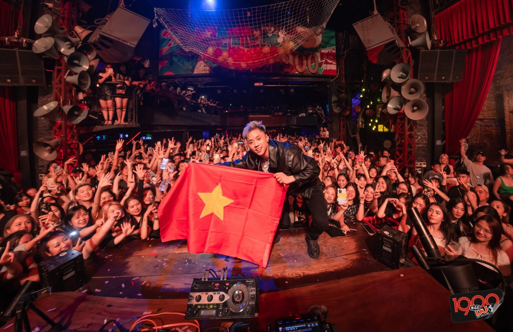
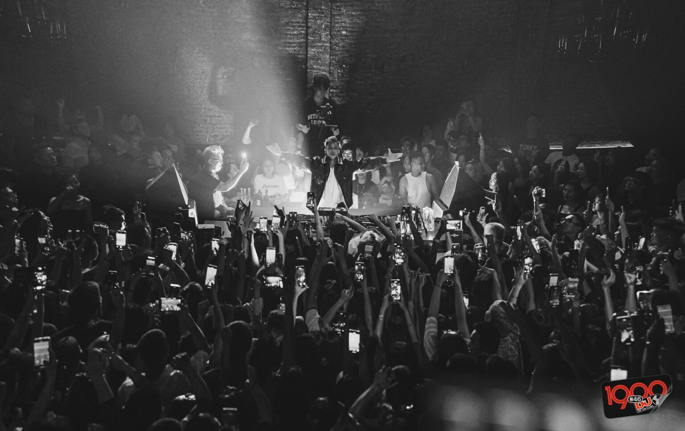

DJ Wukong - Hotboy “Người Ấy Là Ai” xác nhận sẽ tham gia Happy Bee 12!
10:08 13/10/2022
Nằm trong danh sách những DJ quốc tế tham gia vào Happy Bee 12 lần này,
DJ Wukong hứa hẹn sẽ mang đến cho khán giả trẻ không gian âm nhạc tuyệt
vời cùng những track nhạc “quẩy” cực sung.
DJ Wukong (tên thật là Alfy Ngor) sinh ra và lớn lên tại Singapore. Tuy
nhiên, anh lại mang trong mình hai dòng máu người Hoa của bố và Malaysia
của mẹ. Hiện tại, anh vẫn đã và đang duy trì công việc âm nhạc của mình
và phát triển tốt tại các nước châu Á, trong đó có Việt Nam. Anh là
người châu Á đầu tiên được ký hợp đồng với Label Liquid State kết hợp
cùng 2 DJ đình đám thế giới: Alan Walker và R3HAB.

Được coi là một ngôi sao đang lên tại thị trường DJ quốc tế, ít ai
biết rằng chàng DJ châu Á tài năng này cũng từng phải trải qua nhiều
khó khăn để gặt hái được thành công trong hiện tại. Bắt đầu là một
Raver, Wukong đi khắp nơi để được hòa vào những bữa tiệc âm nhạc điện
tử sôi động cùng tiếng hò reo trong những phần biểu diễn của các nghệ
sĩ. Anh chia sẻ bản thân đã đi tới hơn 80 Festivals âm nhạc, gặp gỡ
những DJ nổi tiếng nhất thế giới. Đặc biệt, chứng kiến DJ yêu thích
KHSMR của mình trên sân khấu với những màn “drop the beat” độc đáo,
anh như có thêm động lực, được thôi thúc để trở thành một DJ thực thụ.

Trong thời gian đầu, Wukong cũng tham gia chơi nhạc cho các Club và
House Party, tuy nhiên, chính anh cũng nhận biết rõ bản thân đang làm
không tốt khoản mixing khi chứng kiến khán giả lần lượt ra về trong
một buổi hoạt động tại Club. Từ đây, anh cũng nhìn ra bản thân không
hợp với nghề DJ, đam mê thực sự của anh chính là sản xuất âm nhạc.
Điều này đã khiến anh từ bỏ công việc tại các Club, Bar và nghiêm túc
theo đuổi con đường trở thành một Producer chân chính chỉ qua hình
thức tự học, tự tìm hiểu và các khóa dạy làm nhạc online.